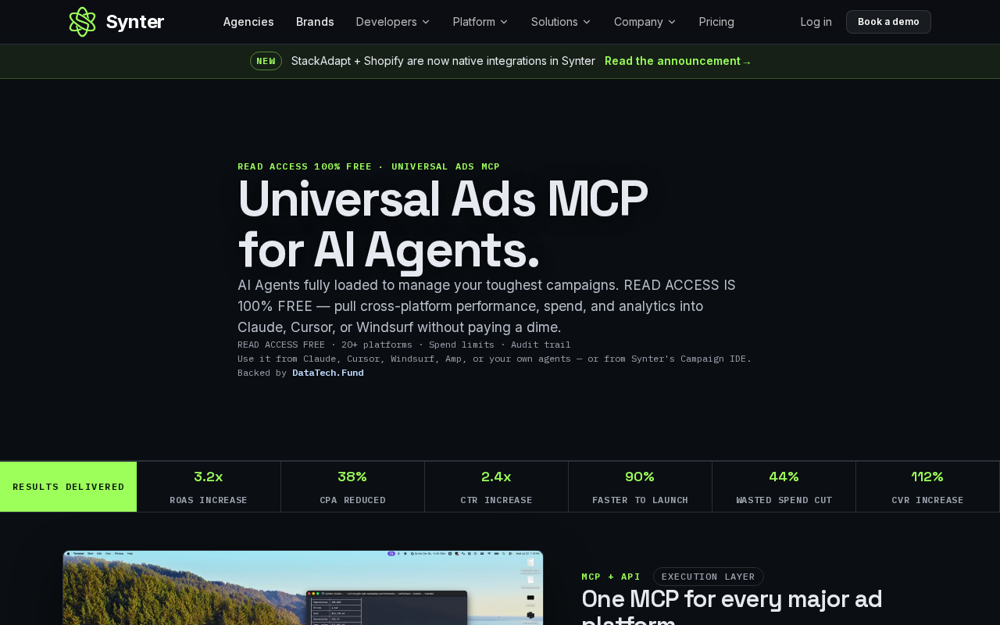
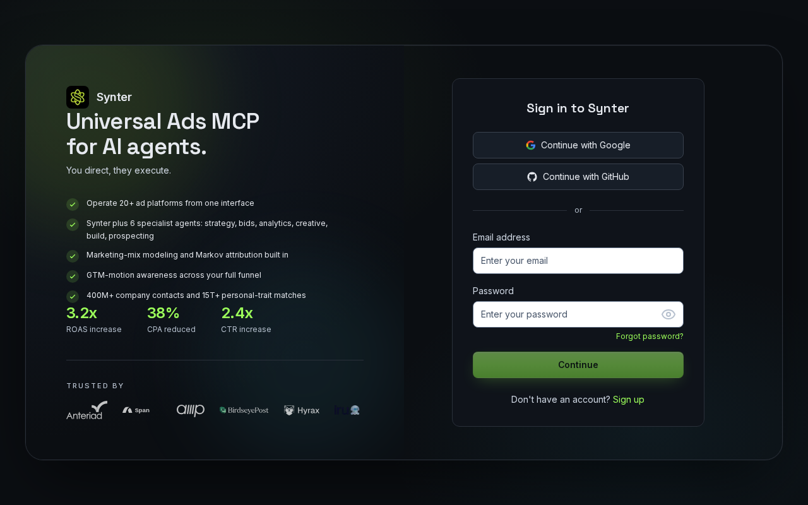

Think aloud: One MCP for every major ad platform, works from Cursor with my own agents — that's exactly what I've been looking for. Before I dig into the marketing, I need to get into my dashboard and see the actual MCP setup.
URL/context: https://syntermedia.ai/

Think aloud: Sign-in form is straightforward — email and password, no OAuth detour needed. The '20+ ad platforms from one interface' pitch is exactly what I'm after, so let me get inside and see the MCP setup.
URL/context: https://syntermedia.ai/sign-in
Think aloud: I can keep moving through the visible product flow: Fill the password field next.
URL/context: https://syntermedia.ai/sign-in
Think aloud: I can keep moving through the visible product flow: Click Continue to submit the sign-in form after both fields are filled.
URL/context: https://syntermedia.ai/sign-in
Think aloud: Hmm, my password ended up in the email field and the password box is still empty — sloppy. Let me clear that and put the right credentials in before hitting Continue.
URL/context: https://syntermedia.ai/sign-in
Think aloud: I can keep moving through the visible product flow: Replace the selected wrong content with the correct account email.
URL/context: https://syntermedia.ai/sign-in
Think aloud: I can keep moving through the visible product flow: Fill the password field with the correct password.
URL/context: https://syntermedia.ai/sign-in
Think aloud: I can keep moving through the visible product flow: Submit the sign-in form with Continue.
URL/context: https://syntermedia.ai/sign-in
Think aloud: Submitted my credentials and it's spinning on a loading screen. Hoping this drops me straight into the dashboard so I can hunt for the MCP connection details.
URL/context: https://syntermedia.ai/campaigns/ide
Think aloud: I'm in — free tier with $25 of monthly usage, and there's already a 'Run in Claude' MCP snippet visible. First, clearing this webinar popup so I can actually read the workspace.
URL/context: https://syntermedia.ai/campaigns/ide
Think aloud: The MCP endpoint is right here — mcp.syntermedia.ai over HTTP transport, exactly what I'd plug into Cursor or Claude. Opening the full install options to see what tools and platforms the MCP actually exposes.
URL/context: https://syntermedia.ai/campaigns/ide
Think aloud: This is the good stuff — one HTTP endpoint at mcp.syntermedia.ai with OAuth, plus install paths for Claude Code, Codex, and Cursor. Technically clean. Now I want the web app to see how ad platforms actually connect.
URL/context: https://syntermedia.ai/get-started
Think aloud: I'm in the workspace now — sidebar has Connections, API keys, Docs, all the developer-relevant entries. Connections is where the ad platform catalog should live, so I'm heading there to see which platforms I can actually wire up.
URL/context: https://syntermedia.ai/campaigns/ide/0168d0a7-7f2e-471d-bed8-0b667086478b
Think aloud: The full ad platform catalog is here — Google, Meta, LinkedIn, TikTok, Reddit, Microsoft, X, Amazon, Pinterest. Solid coverage for avoiding 20 separate API integrations. I'll open Google Ads to see what the connect flow actually looks like.
URL/context: https://syntermedia.ai/settings/credentials
Think aloud: Ten platforms on one connections page — that covers the agency's whole client roster. Before I judge the connect flow, I'm opening Google Ads to see what permissions and setup it actually asks for.
URL/context: https://syntermedia.ai/settings/credentials
Think aloud: The card grid is right in front of me. I'll try the Google Ads card by its label this time — I want to see the actual connect flow and permissions it requests.
URL/context: https://syntermedia.ai/settings/credentials
Think aloud: The Google Ads card isn't responding, so instead of fighting it I'll use the main 'Connect account' button up top — that's the primary entry point anyway and should show me the same platform connection flow with the permissions detail I want.
URL/context: https://syntermedia.ai/settings/credentials
Think aloud: This is the full picture I needed: ten ad platforms ready to connect via OAuth, an API key already active, and the MCP install flow I saw earlier. Connecting a real account means handing off to Google or Meta OAuth, which is beyond what I'd do in a first look. Technically, this covers my cross-platform reporting use case — I'd trial the MCP read tier next.
URL/context: https://syntermedia.ai/settings/credentials